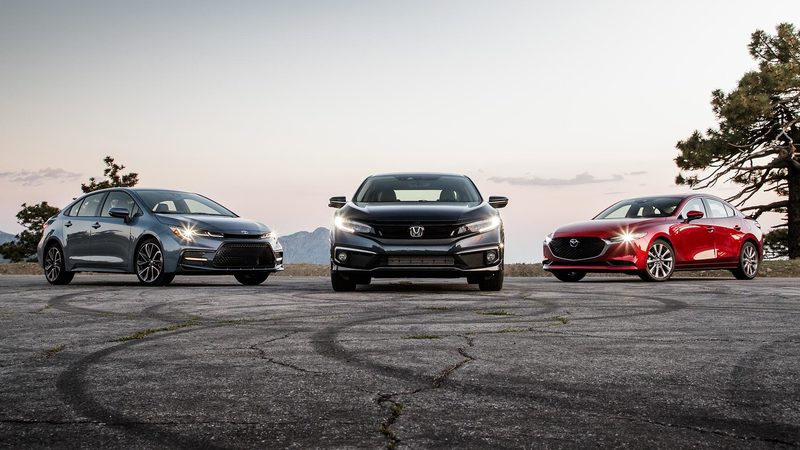

Spoľahlivé autá: Ktoré modely vydržia roky?
Pri kúpe auta je pre mnohých vodičov najdôležitejším faktorom jeho spoľahlivosť. Nikto nechce tráviť veľa času v servise a míňať stovky eur na neustále opravy. Niektoré autá dokážu pri správnej údržbe najazdiť stovky tisíc kilometrov bez vážnych problémov. Ako si však vybrať vozidlo, ktoré vydrží čo najdlhšie?
Čo robí auto spoľahlivým?
Spoľahlivosť automobilu závisí od viacerých faktorov. Dôležitú úlohu zohráva konštrukcia motora, kvalita použitých materiálov, pravidelný servis a spôsob jazdy. Ani najspoľahlivejšie auto sa nezaobíde bez výmeny oleja, filtrov a ďalších opotrebiteľných súčiastok.
Pri výbere jazdeného vozidla by sme sa nemali pozerať iba na značku alebo rok výroby. Rovnako dôležitý je technický stav konkrétneho auta a jeho servisná história.
5 modelov, ktoré stoja za pozornosť
Medzi modely, ktoré sa často spomínajú pri výbere spoľahlivého jazdeného auta, patria:
- Toyota Corolla - praktické vozidlo známe svojou jednoduchosťou a dostupnosťou náhradných dielov.
- Honda Civic - ponúka dobré jazdné vlastnosti a pri správnej údržbe môže slúžiť mnoho rokov.
- Lexus IS - prémiový sedan, ktorý kombinuje komfort s dôrazom na kvalitu spracovania.
- Škoda Octavia - obľúbené auto s priestranným interiérom a širokou ponukou motorov.
- Mazda 3 - kompaktné vozidlo, ktoré ponúka príjemné jazdné vlastnosti a úsporné motorizácie.
Treba však pamätať na to, že spoľahlivosť sa líši podľa konkrétneho motora, generácie, nájazdu kilometrov a starostlivosti predchádzajúceho majiteľa.
Porovnanie vybraných modelov
| Model | Hlavná výhoda | Vhodné použitie |
|---|---|---|
| Toyota Corolla | Praktickosť a úspornosť | Mesto a každodenné jazdenie |
| Honda Civic | Dobré jazdné vlastnosti | |
| Lexus IS | Komfort a spracovanie | Dlhšie cesty |
| Škoda Octavia | Veľký batožinový priestor | Rodina a cestovanie |
| Mazda 3 | Jazdné vlastnosti | Mesto aj okresné cesty |
| Údaje sú orientačné a líšia sa podľa generácie a motorizácie. | ||
Na čo si dať pozor pri kúpe jazdeného auta?
Pred kúpou vozidla je vhodné skontrolovať niekoľko základných vecí:
- Servisná história: over si, či bol olej a filtre menené v odporúčaných intervaloch.
- Motor: všímaj si nezvyčajné zvuky, dymenie a prípadné úniky oleja.
- Karoséria: skontroluj koróziu, poškodenia a známky po opravách po nehode.
- Podvozok: počas skúšobnej jazdy sleduj klepanie a neobvyklé vibrácie.
- Dokumentácia: porovnaj stav kilometrov so servisnými záznamami.

Oplatí sa investovať do spoľahlivého auta?
Kvalitné auto nemusí byť automaticky drahé. Niekedy môže byť starší model s overeným motorom rozumnejšou voľbou ako novšie vozidlo s komplikovanou technikou. Dôležité je vybrať si auto podľa svojich potrieb a finančných možností.
Pri kúpe jazdeného vozidla sa oplatí investovať aj do kontroly v nezávislom servise. Niekoľko desiatok eur za odbornú prehliadku môže pomôcť odhaliť problémy, ktorých oprava by neskôr stála stovky až tisíce eur.
Spoľahlivé auto je výsledkom dobrej konštrukcie, kvalitného servisu a zodpovedného prístupu majiteľa. Pri výbere by sme sa nemali riadiť iba reklamou alebo skúsenosťami známych, ale aj technickým stavom vozidla. Správne vybrané auto nám môže slúžiť dlhé roky a ušetriť množstvo peňazí aj starostí.